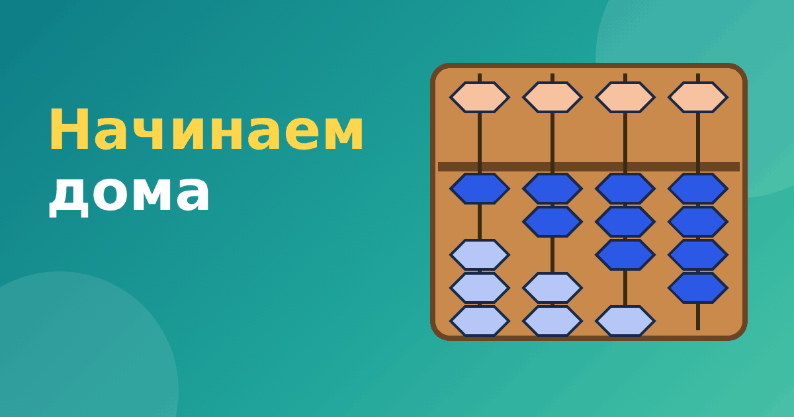

С чего начать ментальную арифметику дома: пошаговый план

Можно ли заниматься ментальной арифметикой дома, без кружка? Да, это возможно, особенно на начальных этапах. Родителю не нужно быть математиком: достаточно понимать логику абакуса и заниматься понемногу, но регулярно. Ниже практический план: что купить, как заниматься и на что смотреть.
Что понадобится
Минимум — это абакус. Можно купить настоящий соробан или начать с виртуального. Настоящие счёты хороши тем, что ребёнок двигает бусины пальцами, виртуальные удобны тем, что всегда под рукой и сами проверяют ответ. Многие семьи используют и то, и другое. Для старта подойдёт бесплатный модуль нашего тренажёра «Ментальная арифметика».
Дополнительно пригодятся тетрадь для отметок о занятиях и таймер. Не нужно сложных пособий, достаточно регулярности.
Режим занятий
Лучше заниматься каждый день по 10–15 минут, чем два раза в неделю по часу. Объём важнее дробить: внимание ребёнка быстро устаёт, а навык закрепляется повторением. Выберите постоянное время, например после завтрака или перед ужином. Не занимайтесь в конце тяжёлого дня.
Неделя 1: знакомство с абакусом
Цель — научиться читать и набирать числа. Покажите ребёнку, что верхняя бусина стоит за 5, а нижние по 1. Поиграйте: «Покажи число 7», «Какое число я набрала?». Сначала однозначные, потом двузначные числа до 99. Подробнее об устройстве — в статье абакус и соробан.
Неделя 2: сложение и вычитание без переходов
Начинайте с самых простых случаев, когда бусин хватает: 2 + 3, 4 + 5, 8 − 3. Ребёнок двигает бусины и сам проверяет, что получилось. На этом этапе важны точность и спокойствие, скорость пока не нужна. Подробный разбор — в статьях сложение на абакусе и вычитание на абакусе.
Неделя 3: приёмы «помощь брата» и «помощь друга»
Это самый трудный момент, потому что здесь появляется правило: когда бусин не хватает, нужно действовать особым способом. Дайте на это больше времени. Приёмы разобраны в статьях про помощь брата и помощь друга. Не переходите дальше, пока ребёнок не чувствует себя уверенно.
Неделя 4: первые шаги к ментальному счёту
Попробуйте упражнение «вспышка»: покажите абакус на три секунды и спрячьте, ребёнок называет число. Начните с одной цифры. Потом добавьте короткие цепочки: 3, +4, −2. О том, как строится мысленный этап, мы писали в статье как работает ментальный счёт.
Как поддерживать интерес
- Показывайте прогресс: отмечайте дни занятий и успехи.
- Хвалите точность, а не только скорость.
- Меняйте формат: сегодня набираем числа, завтра соревнуемся с таймером, послезавтра решаем цепочки.
- Не сравнивайте ребёнка с другими детьми.
- Разрешайте ошибаться. Ошибка — это сигнал вернуться на шаг назад.
Когда нужен преподаватель
Домашние занятия хороши для знакомства и закрепления. Если вы чувствуете, что застряли, или хотите дойти до уверенного мысленного счёта, можно взять несколько занятий с преподавателем или выбрать курс. О том, на что смотреть при выборе, читайте в статье как выбрать курс ментальной арифметики.
Как выглядит одно занятие
Удобная структура занятия на 12–15 минут помогает не терять время. Сначала две-три минуты разминка: ребёнок набирает на абакусе числа, которые вы называете. Затем пять-шесть минут основной части, где отрабатывается новый приём или решаются примеры. В конце три-четыре минуты игры: например, «вспышка» или соревнование с таймером. Заканчивайте всегда на удачном примере, чтобы у ребёнка оставалось ощущение успеха.
Такой порядок особенно полезен, когда ментальная арифметика дома совмещается с другими делами. Вы всегда знаете, что делать, а ребёнок привыкает к понятному ритму. И не бойтесь пропусков: пропущенный день не страшен, главное — не пропускать неделями.
Частые вопросы
Что делать, если ребёнок отказывается заниматься?
Сделайте паузу на несколько дней и вернитесь в другом формате: игра, соревнование с родителем, занятие на виртуальном абакусе. Принуждение быстро отбивает интерес.
Нужен ли настоящий абакус или хватит виртуального?
Для начала хватит виртуального. Настоящий полезен, если ребёнку важно двигать бусины руками. Многие семьи используют оба варианта.
Итог
Начать несложно: нужен абакус, 10 минут в день и понятный порядок шагов. Не ждите быстрых чудес, но если держаться плана, через месяц ребёнок обычно уверенно читает числа и складывает на абакусе.